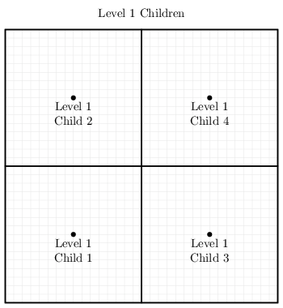
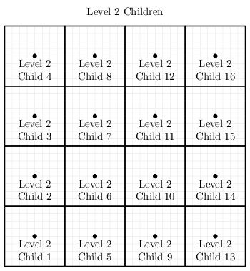

RPTree
Generalizing quadtrees & octtrees
1. Introduction
A quadtree is a nested 2D multi-resolution rectangular mesh. We start with a rectangular region of \(\mathbb{R}^2\) and split it up into sub-rectangles. We then continue the process with each of these new rectangles. An octtree is the obvious generalization of the quadtree to 3D – start with a cube, and recursively break it up into sub-cubes. The recursive structure of these structures makes them a a natural fit with tree data structures.
It's a simple exercise to mathematically generalize quadtrees and octtrees to \(2^n\mathrm{-trees}\); however, generalizing computer codes to impliment these generalizations is no trivial task. Most usefull operations on \(2^n\mathrm{-trees}\) are inherently driven by the geometry of the mesh. This introduces difficult algorithmic problems because of the diffucltiy of translateing these geometric problems into tree manipulation. In this library we overcome these difficluties by dispensing with the tree data structure entirely.
The key innovation at the heart of this new data structure is an enumeration scheme uniquely identifing both mesh cells and vertex points via an integer intimately related to the geometric structure of the grid. The close relationship between these integers and the grid geometry dramatically simplifies generalizeing the quadtree concept to arbitrary dimensions. In order to define this enummeration we must make two simplifying assumptions about our trees:
- Our trees require a strictly regular refinement stratigy. i.e. We always refine a cell of a \(2^n\mathrm{-tree}\) into \(n\) parts.
- We must choose a maximum refinement depth (we call this the tree's MESH-POWER and denote it by \(P\)).
An example is in order. Suppose we wish to sample on the unit interval \([0, 1]\) – i.e. the real numbers from 0 to 1 inclusive.
Now suppose that we have determined that we don't need any more than 32 intervals (note 32 is a power of 2). We can enumerate these potential sample points with integers like this:
We start a tree with one quad (a line sgement in this case) over the entire domain.
Now we refine the right inteveral:
Now we refine the interval just to the right of the midpoint:

Finally we refine the right side of the interval we just refined:
For refrence, this set of nested intervals might be stored in a tree data structure liek so:
Several key observations about our chosen integer coordinate system:
- The center point index of a cell, \(\mathtt{c}\), is never the center point of another cell.
Therefore cell center point indexes may be used as a unique identifier for the cell. - A cell's depth or level is counted from the top cell (level zero) down. The level is \(\mathtt{P-1-ctz(c)}\).
- The indexes of a cell's end points are \(\mathtt{c}\pm\mathtt{c\,\&\,(\tilde{} c + 1)}\)
- The \(x\) value for an index may be computed as \(x=x_{min}+\frac{x_{max}-x_{min}}{2^P}i\)
The first of our observations implies we can store our tree data in a dictionary data structure with the key being the cell integer index. Additionally this implies that we may make use of the integer key optimized dictionary containers (usually a hash map) included as standard parts of modern programming languages. The third and fourth items on our list imply that we only need to store function values for each sample point – not the \(x\) values in the domain. So not only can we use a standard data structure, but we only need to store one value per sample. Additionally the formulas in the last three items allow us to compute a great many geometrically interesting things in constant time (\(\mathcal{O}(1)\)). We don't even need to access the sample data from our tree to do so as many values are derived from the cell center index value directly.
Generalizing our 1D example to \(\mathbb{R}^n\) is a simple matter of forming cross products of our construction in 1D! We use the same integer coordinate
systems on each axis. We then form our integer key as the concatenation of the coordinate integers for each point. For example in the following, \(P=5\), quad
tree the center point is at coordinates \((16,16)\). So we might pack these two values in a 16-bit integer as \(\mathtt{0001000000010000 = 0x1010}\). We can
pack multidimensional tuples into native integers, or we can use more sophisticated data structures like C++'s std::bitset. All that matters is that our
data structure choice is hashable in our language of choice.
1.1. The Details
1.1.1. Notation
- \(P\) – The mesh power of the RPTree
- \(D\) – The dimension of the RPTree
- \(\mathbb{Z}_{k}\) – Non-negative (unsigned) integers less than \(k\). \[\mathbb{Z}_{k} = \left\{ i\in\mathbb{Z} \,\vert\, 0\le i\lt k \right\}\]
- \(\mathcal{L}=\mathbb{Z}_{2^P+1}^D\) – The \(D\) dimensional integer latice where integer coordinates are defined.
As usual, the power set of \(\mathcal{L}\) is written \(2^\mathcal{L}\).
We use \(\vec{\mathbf{n}}=[n_1, ..., n_D]\in\mathcal{L}\) for general elements of \(\mathcal{L}\). When \(D=1\), we use \(n\) instead of \(\vec{\mathbf{n}}\). - \(\mathcal{C}\subset\mathcal{L}\) – The subset \(\mathcal{L}\) coorispnoding to coordinates that can be used as a cell center.
As usual, the power set of \(\mathcal{C}\) is written \(2^\mathcal{C}\).
We use \(\vec{\mathbf{c}}=[c_1, ..., c_D]\in\mathcal{C}\) – for general elements of \(\mathcal{C}\). When \(D=1\), we use \(c\).
The set of cells and cell centers are in 1-1 coorispondance, and thus we use the cell centers to identify cells.
As such, when we speak of a "set of cells", we are actually refering to a set of "cell centers" (integer coordinate tuples). - \(L(\vec{\mathbf{c}}) : \mathcal{C} \rightarrow \mathbb{Z}_P\) – Level of cell \(\vec{\mathbf{c}}\) \[L(\vec{\mathbf{c}}) = (P-1)-\mathrm{ctz}(c_1)\] Note that \(\mathrm{ctz}(c_i)=\mathrm{ctz}(c_j)\) for all indexes of \(i\) & \(j\). i.e. the levels of all coordinate components are equal.
- \(H(\vec{\mathbf{c}}) : \mathcal{C} \rightarrow \mathbb{Z}_{2^P+1}\) – Half the width of the cell.
\[H(\vec{\mathbf{c}})=2^{P-L(\vec{\mathbf{c}})-1} = 2^{\mathrm{ctz}(c_1)}\]
This is just \(c_1\) with all bits cleared except the least significant one bit.
If we set \(\mathtt{c}=c_1\), then \(H(\vec{\mathbf{c}}) = \mathtt{c\,\&\,(\tilde{} c + 1)}\) - \(W(\vec{\mathbf{c}}) : \mathcal{C} \rightarrow \mathbb{Z}_{2^P+1}\) – The width of the cell. \(W(\vec{\mathbf{c}}) = 2 H(\vec{\mathbf{c}})\)
- \(A(\vec{\mathbf{c}}, d) : \mathcal{C}\times\mathbb{Z}_P \rightarrow \mathcal{C}\) – Ancestor of level \(L(\vec{\mathbf{c}})-d\).
\(A(\vec{\mathbf{c}}, 0)=\vec{\mathbf{c}}\).
We call \(A(\vec{\mathbf{c}}, 1)\) the parent, and \(A(\vec{\mathbf{c}}, 2)\) the grandparent. - \(C(\vec{\mathbf{c}}, d) : \mathcal{C}\times\mathbb{Z}_P \rightarrow 2^\mathcal{C}\) – The set of children of level \(L(\vec{\mathbf{c}})-d\).
\(C(\vec{\mathbf{c}}, 0)=\vec{\mathbf{c}}\).
We call \(C(\vec{\mathbf{c}}, 1)\) the children, and \(C(\vec{\mathbf{c}}, 2)\) the grandchildren.
|  |  |
\(N(\vec{\mathbf{c}}, d) : \mathcal{C}\times\mathbb{Z}_P \rightarrow 2^\mathcal{C}\) – Neighbors of level \(L(\vec{\mathbf{c}})-d\).
In the case \(d=0\), this set will be neighbors of the same "size" – i.e. the \(H\) of each neighbor will be \(H(\vec{\mathbf{c}})\).\(E(\vec{\mathbf{c}}) : \mathcal{C} \rightarrow 2^\mathcal{L}\) – The set of cell endpoints (i.e. the corners of the cell hyper-rectangle) \[E(c)= \left\{ c-H(c), c+H(c) \right\} \] \[E(\vec{\mathbf{c}})=E(c_1) \times \cdots \times E(c_D)=\prod_{j=1}^{D}E(c_j)\]
\(V(\vec{\mathbf{c}}) : \mathcal{C} \rightarrow 2^\mathcal{L}\) – The set of vertexes of a cell are the cell's endpoints and the center. \[V(\vec{\mathbf{c}}) = E(\vec{\mathbf{c}}) \cup \{\vec{\mathbf{c}}\}\]

\(G(\vec{\mathbf{c}}, d) : \mathcal{C}\times\mathbb{Z}_P \rightarrow 2^\mathcal{L}\) – Grid Points. The vertexes of \(C(\vec{\mathbf{c}}, d)\)
\[G(\vec{\mathbf{c}}, d) = \bigcup_{\vec{\mathbf{c}'}\in C(\vec{\mathbf{c}}, d)} V(\vec{\mathbf{c}'})$ \] Note \(G(\vec{\mathbf{c}}, 0) = V(\vec{\mathbf{c}})\)- \(\hat{R}(K) : 2^\mathcal{L} \rightarrow \mathcal{L}\) & \(\check{R}(K) : 2^\mathcal{L} \rightarrow \mathcal{L}\) – Upper, and lower, bounding rectangle coordinates for a set of coordinates \(K\)
\[\hat{R}(K) = [\max_{n\in K}(n_1), \max_{n\in K}(n_2), ..., \max_{n\in K}(n_D)] \] \[\check{R}(K) = [\min_{n\in K}(n_1), \min_{n\in K}(n_2), ..., \min_{n\in K}(n_D)] \] Both \(\hat{R}(K)\) & \(\check{R}(K)\) are vectors, and subscripts refere to compoents. Ex: \(\hat{R}_i(K)\) \(B(\vec{\mathbf{c}}, d) : \mathcal{C}\times\mathbb{Z}_P \rightarrow 2^\mathcal{L}\) – Boundary Vertexes of \(V(\vec{\mathbf{c}})\). \[B(\vec{\mathbf{c}}, d) = \{ \vec{\mathbf{c}'}\in V(\vec{\mathbf{c}}, d)\,\,\vert\,\,\exists i\in\mathbb{Z}_{P+1} \mathrm{with}\, \vec{\mathbf{c}'}_i=\hat{R}_i(K)\, \mathrm{or}\, \vec{\mathbf{c}'}_i=\check{R}_i(K) \} \] Note \(B(\vec{\mathbf{c}}, 0) = E(\vec{\mathbf{c}})\)
\(I(\vec{\mathbf{c}}, d) : \mathcal{C}\times\mathbb{Z}_P \rightarrow 2^\mathcal{L}\) – Interior Vertexes of \(V(\vec{\mathbf{c}})\). \[B(\vec{\mathbf{c}}, d) = V(\vec{\mathbf{c}}) \setminus B(\vec{\mathbf{c}}, d) \] Note \(I(\vec{\mathbf{c}}, 0) = \{\vec{\mathbf{c}}\}\)
\(Q(\vec{\mathbf{c}}) : \mathcal{C} \rightarrow 2^\mathcal{L}\) – The set of all coordinates (all integer lattice points) contained in the cell \[Q(c)=\{ j\in\mathbb{Z}_{P+1} | E_0(c) \le c \le E_1(c) \}\] \[Q(\vec{\mathbf{c}})=Q(c_0) \times \cdots \times Q(c_n)=\prod_{j=0}^{n-1}Q(c_j)\]
1.1.2. Set enumeration
Here we use the word enumeration from the field of computer science where it refers to the ability to traverse a data structure in a specific order. Many of the functions defined in the previous sections have a range of \(2^\mathcal{L}\) or \(2^\mathcal{C}\), and as a practical matter it is advantageous to place an unambiguous order on these sets.
When enumerating these sets we use the lexicographic ordering, and we use subscripts to denote the elements. For example: \[E(\vec{\mathbf{c}})= \{ E_0(\vec{\mathbf{c}}), E_1(\vec{\mathbf{c}}), , ..., E_{2D}(\vec{\mathbf{c}}) \} \]
1.1.3. Integer coordinates and real coordinates
- \(\hat{X}\) & \(\check{X}\) – Upper, and lower, bounding rectangle points in \(\mathbb{R}^D\)
- \(X(\vec{\mathbf{n}})\) – The \(\vec{\mathbf{x}}\) value associated to the index in the domain space of the function
MORE TO COME. MORE TO COME. MORE TO COME. MORE TO COME. MORE TO COME. MORE TO COME. MORE TO COME.
1.2. Triangulating Quads
Quads are triangulated such that:
- Every triangle has precisely one vertex at the center of the quad
- Every triangle has precisely two vertices in the boundary of the quad
- Every quad boundary point is a vertex of two triangles
- Triangles only overlap on edges and vertices
- A triangle vertex is a vertex of every triangle containing it
- No triangles are degenerate (area zero or three collinear vertexes)
If all quads are the same size, we say the tree is balanced level 0 (i.e. the depth of all neighboring quads are equal). This situation is illustrated below:
If some quads differ in depth from neighboring quads by at most 1, then we say the tree is balanced at a depth of level 1. This balance level is frequently considered as a requirement for quadtrees used as computational meshes. For meshes intended for visual use, the level may safely be made much higher.
Higher balance levels are frequently used for quadtrees used to represent surfaces in visualization pipelines. The groups of triangles emanating from the center are frequently called "fans" in this case. Here is a level 3 example:
2. Software interface
MORE TO COME. MORE TO COME. MORE TO COME. MORE TO COME. MORE TO COME. MORE TO COME. MORE TO COME.